„Set jsme měli do porodnice. Čepička ze stejné látky je k sežrání.“
A
Anna, Brno
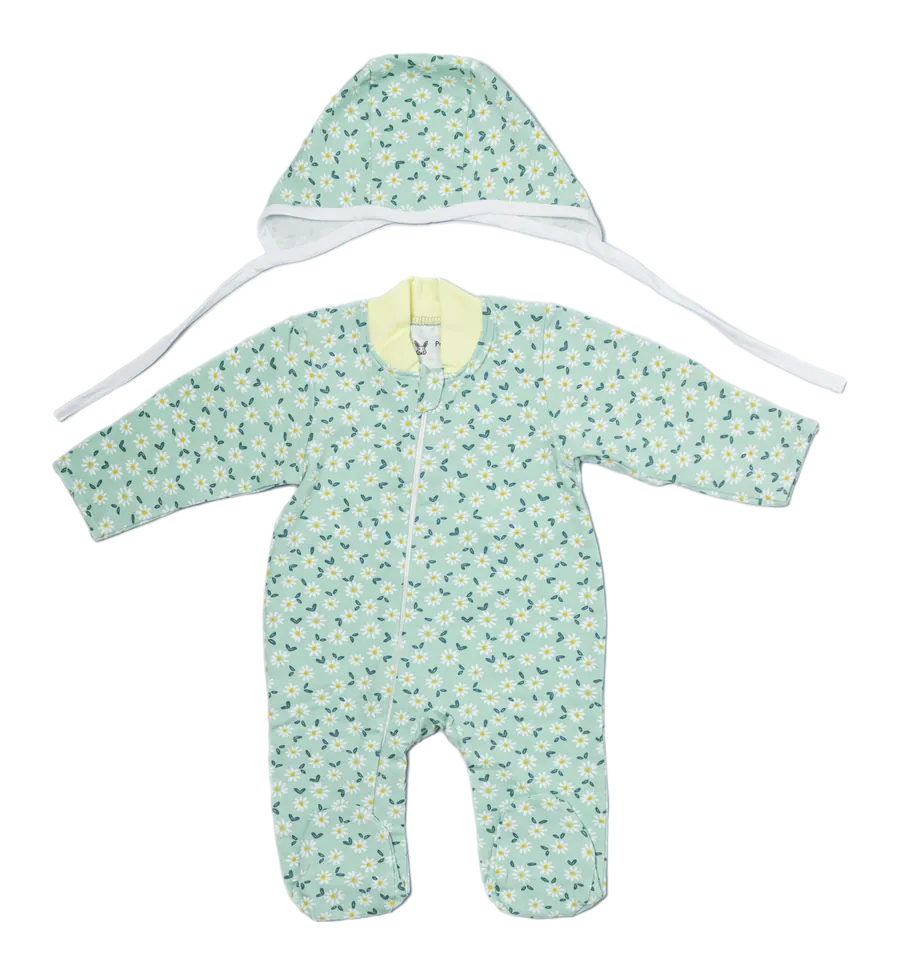
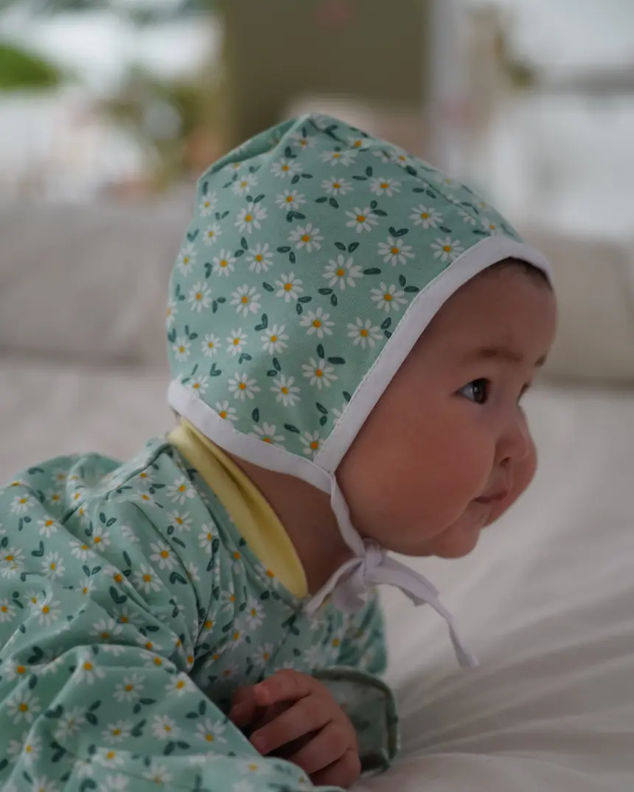
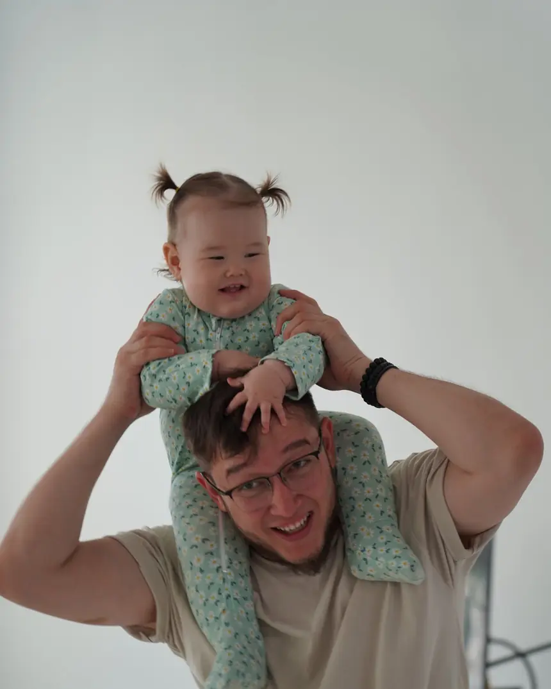
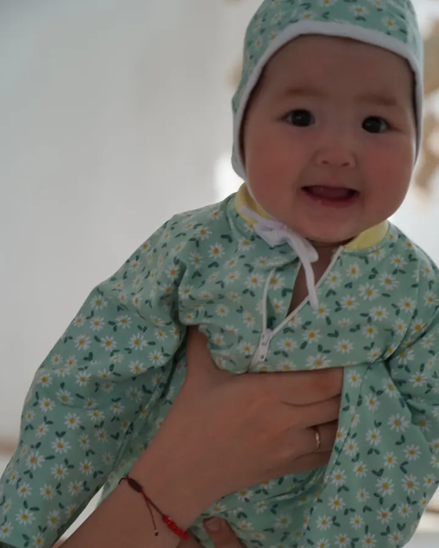
Dupačky s ťapkami a šikmým zipem a k nim čepička na uvazování ze stejné látky. Měkký úplet, ušito v Česku. Do porodnice, na první týdny i jako dárek.
Měkký bavlněný úplet, přesné složení doplníme. Perte na 30 °C naruby se zapnutým zipem, nesušte v sušičce.
Odesíláme do 2 pracovních dnů přes Zásilkovnu nebo PPL. Doprava zdarma od 2 500 Kč. Do 30 dní můžete set vrátit nebo vyměnit za jinou velikost.
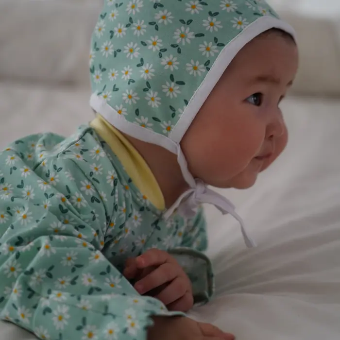
Široké měkké stužky se uvážou volně, čepička drží a nic neškrtí.
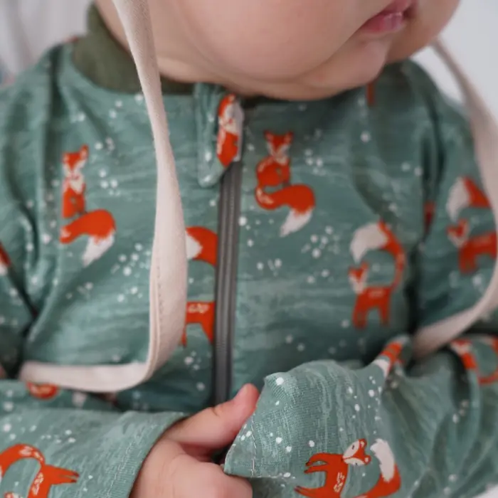
Látkový lem u krku, aby jezdec netlačil na bradičku.
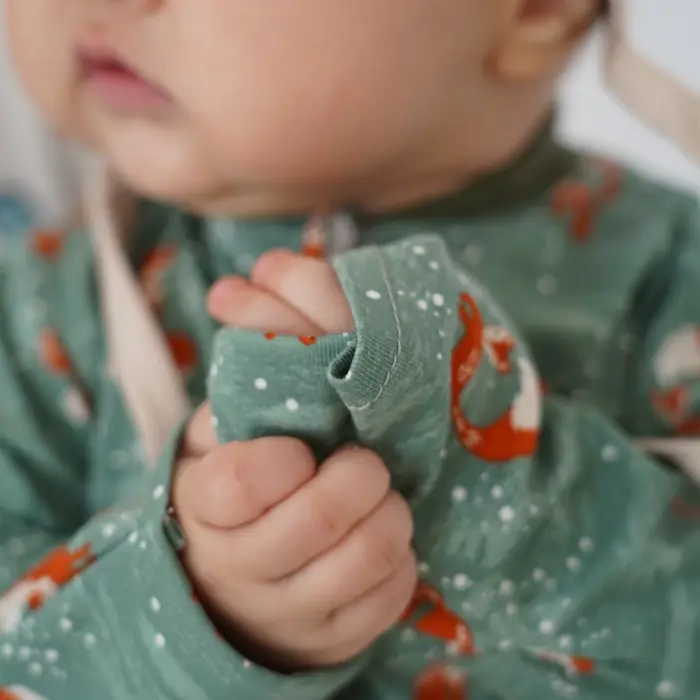
Rukávy i nohavice jsou začištěné tak, aby nic neškrábalo.
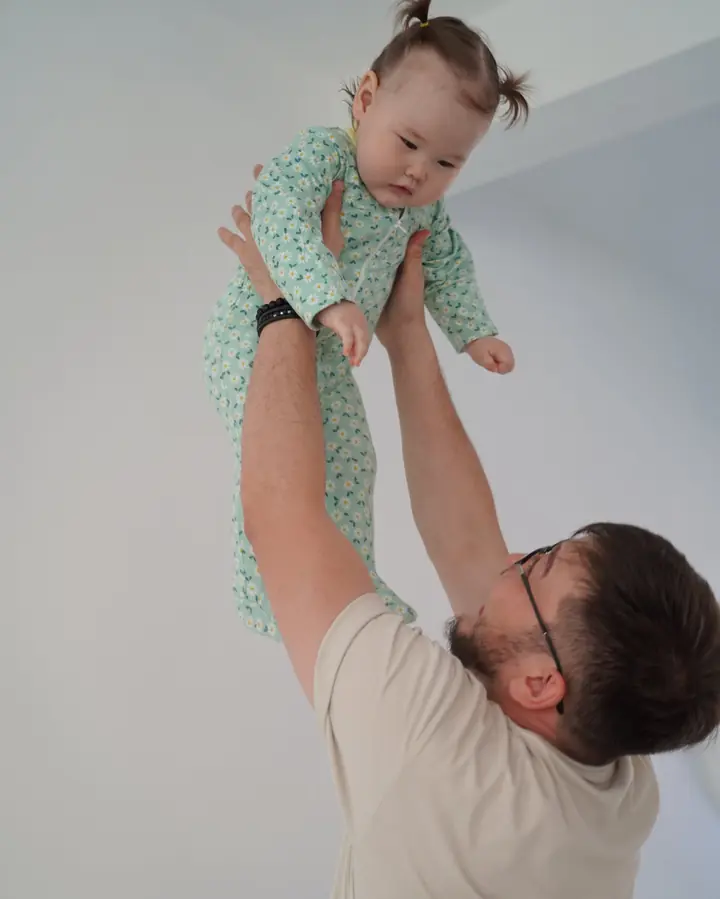
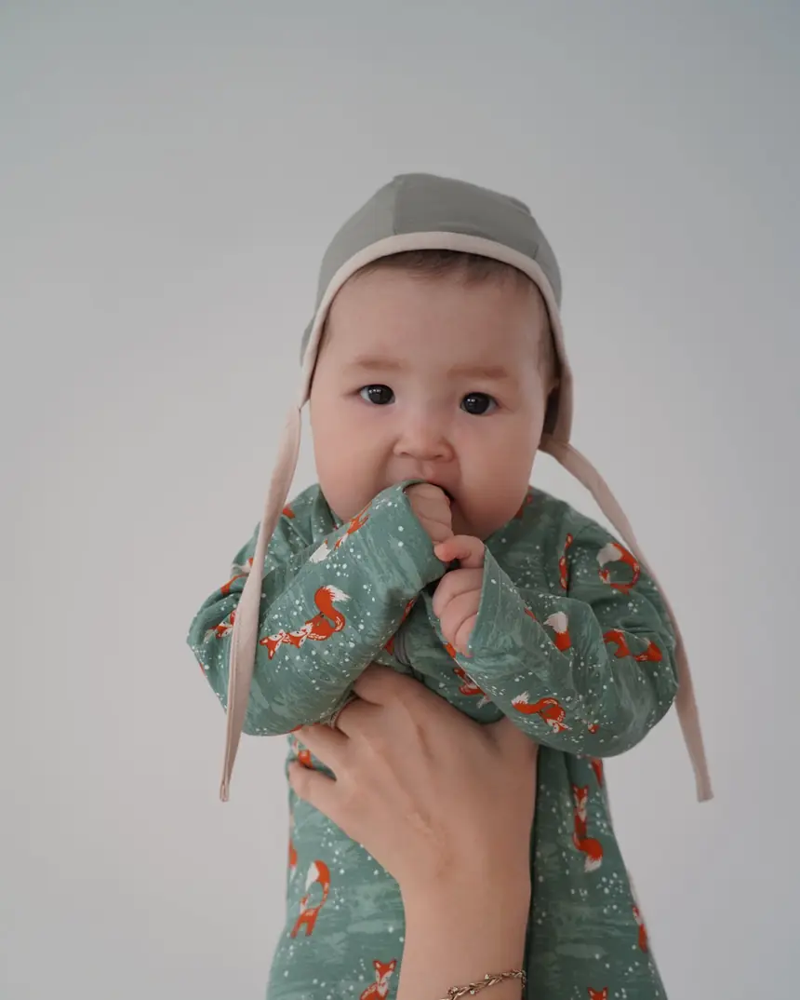
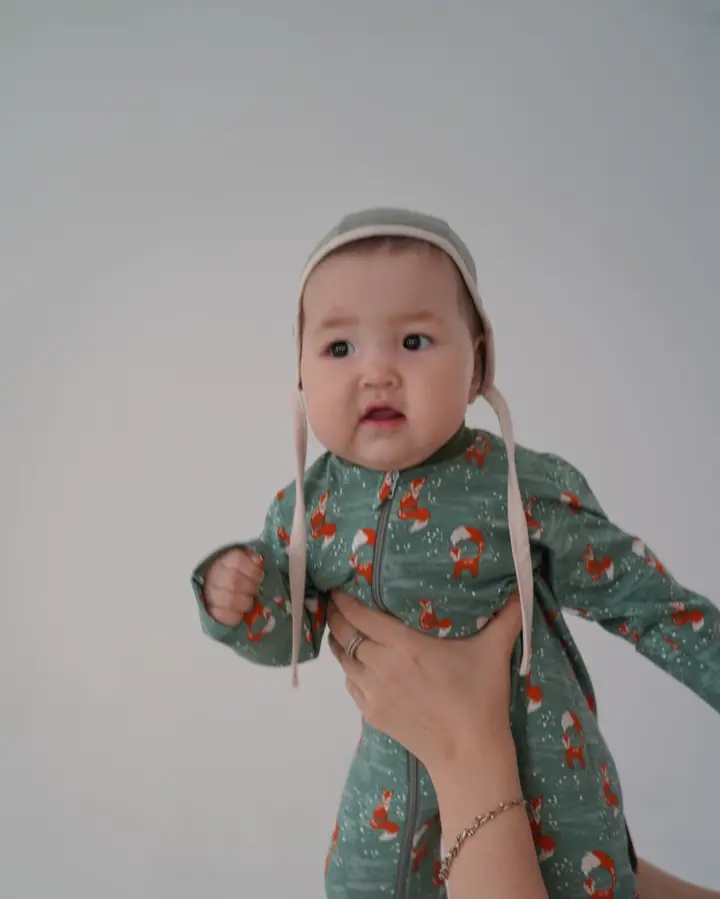

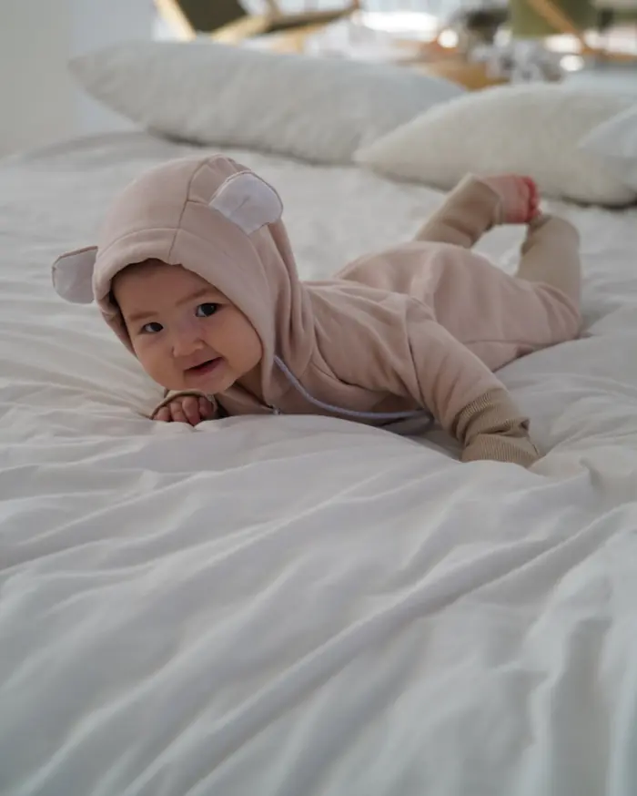
Teplákový overal s oušky a dlouhými manžetami, které se ohrnou a zase rozloží. Vydrží zhruba rok.
Prohlédnout overal„Set jsme měli do porodnice. Čepička ze stejné látky je k sežrání.“
„Ťapky jsou geniální, žádné ztracené ponožky.“
„Krásná měkká látka a zip, který netlačí. Kupovala jsem jako dárek a sklidila jsem úspěch.“
„Vzory jsou jemné, žádné kýčovité obrázky. Velikost sedí.“
„Druhý set jsme dokoupili, protože se pořád nosí.“